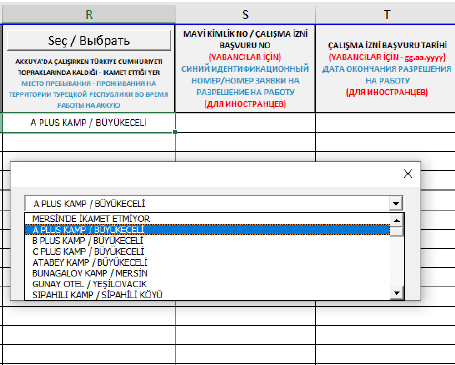
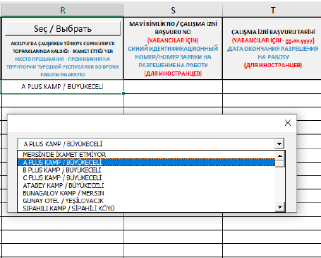

Для получения разрешения на доступ на территорию (та же процедура применяется как для посетителей, так и для постоянных сотрудников) применяется двухэтапный процесс.
Этап 1:
Необходимо официальное письмо, подписанное руководителем компании или уполномоченным лицом (с доверенностью), адресованное Директору по безопасности Артему Зародышу и
Заместителю директора по безопасности Селиму Темрену для получения согласования.
Этап 2:
После получения согласования необходимо отправить следующие документы на электронную почту id@t2ic.com:
• Скан паспорта
• Официальное письмо
• Если есть, скан синих удостоверений личности, если нет:
- Заявка на разрешение на работу и скриншот, если нет:
- Направление и рабочая тетрадь
• Информация о мерах безопасности на территории
• Форма явного согласия для доступа на территорию
• Таблица Excel для входа персонала (должна быть заполнена в соответствии с инструкциями)
ПРИМЕЧАНИЕ: Для персонала с назначением срок действия карты или пропуска будет равен сроку назначения.
Физическая передача документов не требуется.
Важно, чтобы документы были правильно упорядочены и именованы в соответствии с правилами. Это ускорит процесс их обработки. Документы должны быть названы с указанием ФИО, как в паспорте, заглавными буквами, и для каждого человека должны быть созданы отдельные файлы. Пожалуйста, отправляйте документы, именованные по номеру паспорта, в формате zip 7Z и в формате PDF.
ПРИМЕЧАНИЕ: Если персонала несколько, документы должны быть именованы по имени файла. Например, все сканы паспортов должны быть в одном файле с названием "PASAPORT".
Например, в файле для Карины Сазановой:
КАРИНА САЗАНОВА ПАСПОРТ
КАРИНА САЗАНОВА ЯВНОЕ СОГЛАСИЕ
КАРИНА САЗАНОВА ЗАПРЕЩЕННЫЕ ДЕЙСТВИЯ
ВАЖНО: Если персонал приходит из другой компании, также должна быть предоставлена копия контракта этой компании с компанией на территории (первая и последняя страница).
• Кроме того, без формы медицинского осмотра разрешение на вход для посетителей может быть выдано максимум на 5 рабочих дней. Для более длительного доступа необходимо связаться с subcontractor@t2ic.com.
Заявление о явном согласии в рамках процедуры доступа на территорию АЭС «Аккую»
Этот документ, в качестве оператора данных и обработчика данных, подтверждает согласие на сбор, хранение, обновление, классификацию и обработку личных данных в рамках процедуры доступа на территорию АЭС «Аккую»; а также, в случаях, разрешённых законодательством, и в случае явного согласия, на раскрытие и передачу этих данных третьим лицам.
1. Документ состоит из 2 страниц.
- На первой странице в указанном месте необходимо указать ФИО сотрудника.

2. Вторая страница включает поля для личной информации и подписи сотрудника:
- В поля, отмеченные стрелкой 1, необходимо указать ФИО сотрудника.
- В поля, отмеченные стрелкой 2, сотрудник должен поставить подпись.
- В поле, отмеченное стрелкой 3, необходимо указать номер личной карты сотрудника (TC Kimlik Numarası).
- В поле, отмеченное стрелкой 4, должна быть указана дата составления документа.
- В поле, отмеченное стрелкой 5, нужно указать номер телефона сотрудника.
- В поле, отмеченное стрелкой 6, необходимо указать электронную почту сотрудника.

Информация о документе, связанном с правилами, которые необходимо соблюдать на территории АЭС «Аккую» (“NGS”):
Документ состоит из двух частей, и в обеих частях должны быть заполнены одни и те же данные:
• «ФИО» (область, отмеченная стрелкой 1): В эти поля должны быть написаны имя и фамилия сотрудника.
• «TC/PAS Номер» (область, отмеченная стрелкой 2): Необходимо указать номер TC Kimlik (если сотрудник является гражданином Турции) или номер паспорта (если не гражданин Турции).
• «Компания» (область, отмеченная стрелкой 3): В эти поля необходимо правильно и полностью указать название компании, в которой будет работать сотрудник.
• «Прочитал, понял» (область, отмеченная стрелкой 4): В эти поля необходимо записать дату заполнения документа, а также поставить подпись сотрудника.


Необходимо предоставить копию (фотокопию) или сканированное изображение передней и задней стороны паспорта, как показано на изображении справа. На скане обе стороны должны быть четкими, без размытости или теней, чтобы информация в паспорте была легко читаемой.
Информация о месте жительства персонала, входящего на строительную площадку АЭС «Аккую»
Для того чтобы Министерство энергетики могло провести проверку безопасности персонала, необходимо предоставить адреса проживания персонала, входящего на строительную площадку АЭС «Аккую». Пропускные карты будут выдаваться сотрудникам на основе этих списков, и важно сообщить адреса, иначе пропуска не будут выданы компанией АЭС «Аккую».
Если адрес проживания персонала еще не установлен или может измениться, необходимо обновить или добавить эту информацию при запросе пропусков.
Дополнительные столбцы и инструкции по вводу данных для персонала, работающего на строительной площадке АЭС «Аккую»:
• В таблице входа персонала есть обязательные для выбора столбцы. Для выбора данных необходимо нажать кнопку Выбрать. Эти поля нельзя заполнять вручную или вставлять скопированный текст. Эти столбцы не могут быть оставлены пустыми, и данные, не соответствующие предложенным вариантам, не будут приняты.
• Столбцы без кнопки Выбрать должны заполняться вручную. Все данные в этих столбцах должны быть записаны заглавными латинскими буквами.

Инструкция по вставке выбранных данных в соответствующий столбец:
• Выберите строку или строки, для которых хотите вставить данные, используя указатель мыши.
• Нажмите кнопку «Добавить в выбранные ячейки» в открывшемся окне. Выбранные данные будут добавлены в выбранные строки. Чем больше строк будет выбрано, тем больше строк будет заполнено данными.

Инструкция по удалению введенных данных:
• Для удаления данных в соответствующем столбце нажмите кнопку «Очистить выбранную ячейку».

• Команда DELETE не может быть использована для удаления данных. При попытке использовать команду DELETE будет выведено предупреждение.

Инструкция по изменению данных:
• Для внесения изменений в данные нажмите кнопку Выбрать и выберите новую информацию. Затем нажмите кнопку «Добавить в выбранные ячейки», чтобы завершить изменение данных.

Новые столбцы в конце таблицы:
Столбец R: Место проживания персонала, находящегося в Турции во время работы на АЭС «Аккую». Этот столбец не обязателен для проверки документов Министерством, но должен быть заполнен при запросе физической карты. Он не может быть оставлен пустым, и если персонал проживает в пределах провинции Мерсин, следует выбрать соответствующий адрес. Если персонал проживает за пределами этой области, выберите опцию «Не проживает в Мерсине».
 

Столбец S: Для иностранных сотрудников необходимо ввести номер заявки на разрешение на работу или номер синей идентификационной карты (номер начинается с 99). Для турецких сотрудников или сотрудников, осуществляющих посещение по поручению, этот столбец заполнять не требуется.

Столбец T: Если подано заявление на разрешение на работу, этот столбец должен быть заполнен для иностранных сотрудников. Если физический идентификатор присутствует, этот столбец заполнять не нужно. Для турецких сотрудников и сотрудников, посещающих площадку по поручению, заполнение не требуется.

Другие поля для заполнения:
1. Дата поступления: Дата подготовки документов.
2. Запрашивающая сторона: Имя и фамилия ответственного за персонал в компании.
3. Контактная информация запрашивающей стороны: Номер мобильного телефона ответственного за персонал.
4. Имя: Имя сотрудника, начинающего работать в компании.
5. Фамилия: Фамилия сотрудника, начинающего работать в компании.
6. TC/PAS: Номер идентификационной карты или паспорта сотрудника.
7. Имя отца: Имя отца для иностранных сотрудников.
8. Место рождения: Место рождения сотрудника.
9. Дата рождения: Дата рождения сотрудника.

10. Должность: Информация о должности сотрудника.
11. Компания: Информация о компании, в которой работает сотрудник.
ПРИМЕЧАНИЕ: Если компания не указана в списке, свяжитесь с нами.
12. Место работы: Место работы сотрудника.
13. Пол: Информация о поле сотрудника.
14. Телефонный номер сотрудника: Телефонный номер сотрудника.
15. Телефонный номер родственника сотрудника: Телефонный номер родственника сотрудника.
16. Уголовный судимость и ограничения по здоровью: Уголовный судимость и ограничения по здоровью сотрудника, если таковые имеются.
17. Гражданство: Информация о гражданстве сотрудника.
ПРИМЕЧАНИЕ: Все поля должны быть заполнены в соответствии с инструкциями.

Для получения разрешения на вход на строительную площадку Akkuyu NGS и оформления пропусков для сотрудников требуется письмо, подписанное директором компании или уполномоченным лицом (с доверенностью), адресованное Директору по безопасности Артему Зародышу и Сопредседателю по безопасности Селиму Темрену. Это письмо, вместе с необходимыми приложениями, должно быть отправлено по следующим шагам:
1. Отправка письма:
Письмо, адресованное Директору по безопасности Артему Зародышу и Сопредседателю по безопасности Селиму Темрену, должно быть отправлено на электронную почту office@t2ic.com.
2. Проверка документов:
Официальное письмо и его приложения должны быть отправлены на электронную почту для иностранных сотрудников id@t2ic.com, для турецких сотрудников на muge.dundar@t2ic.com и hafize.isin@t2ic.com.
3. Таблица списка сотрудников:
• Таблица должна быть подписана и проштампована директором компании или уполномоченным лицом.
• Таблица должна точно совпадать с именами сотрудников, указанными в приложениях. В противном случае документы не будут обработаны.
Завершение этих процедур полноценно и правильно обязательно для оформления разрешения на вход и пропусков для сотрудников.